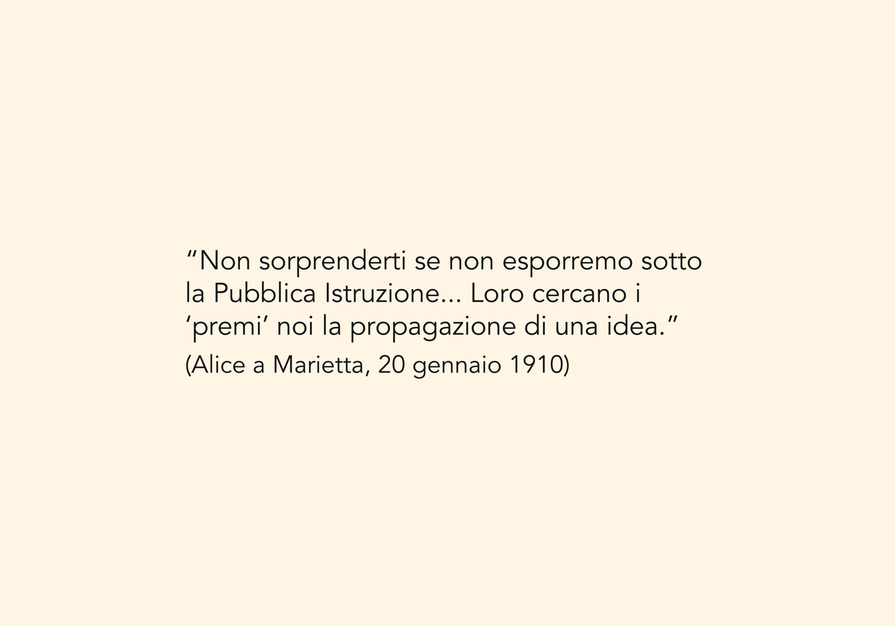
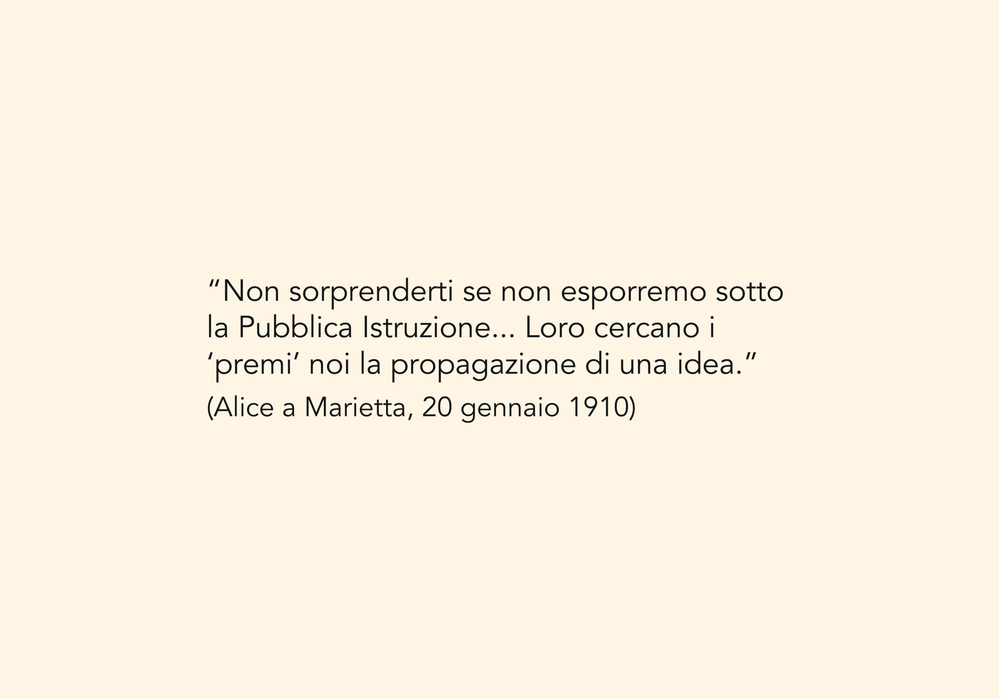
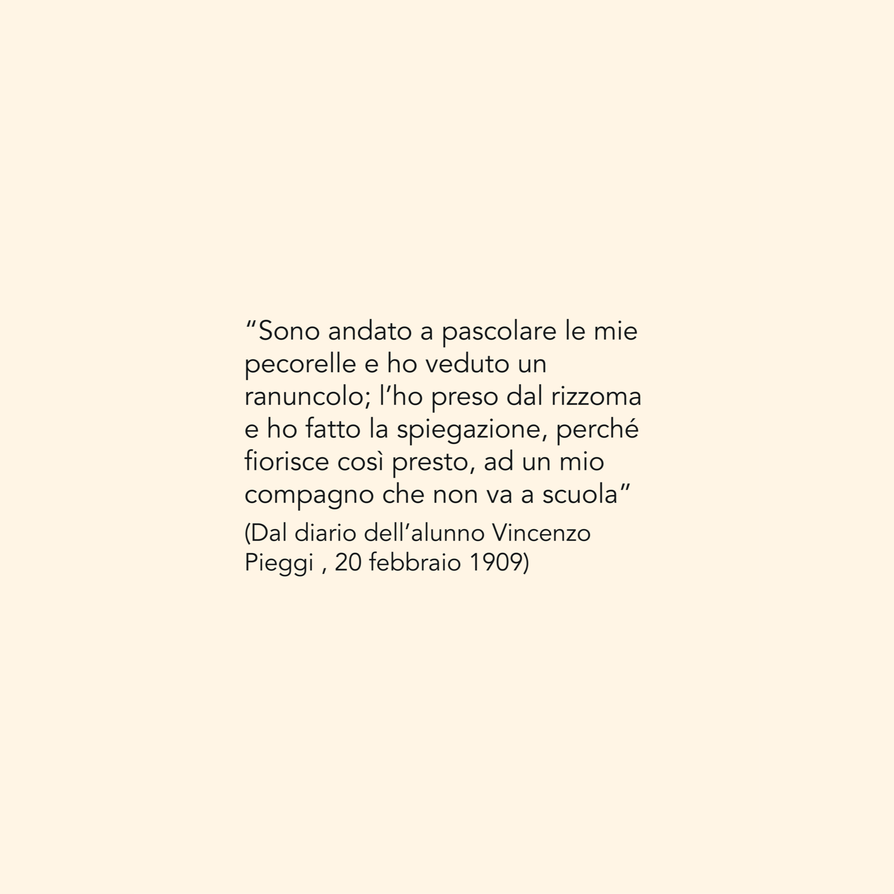
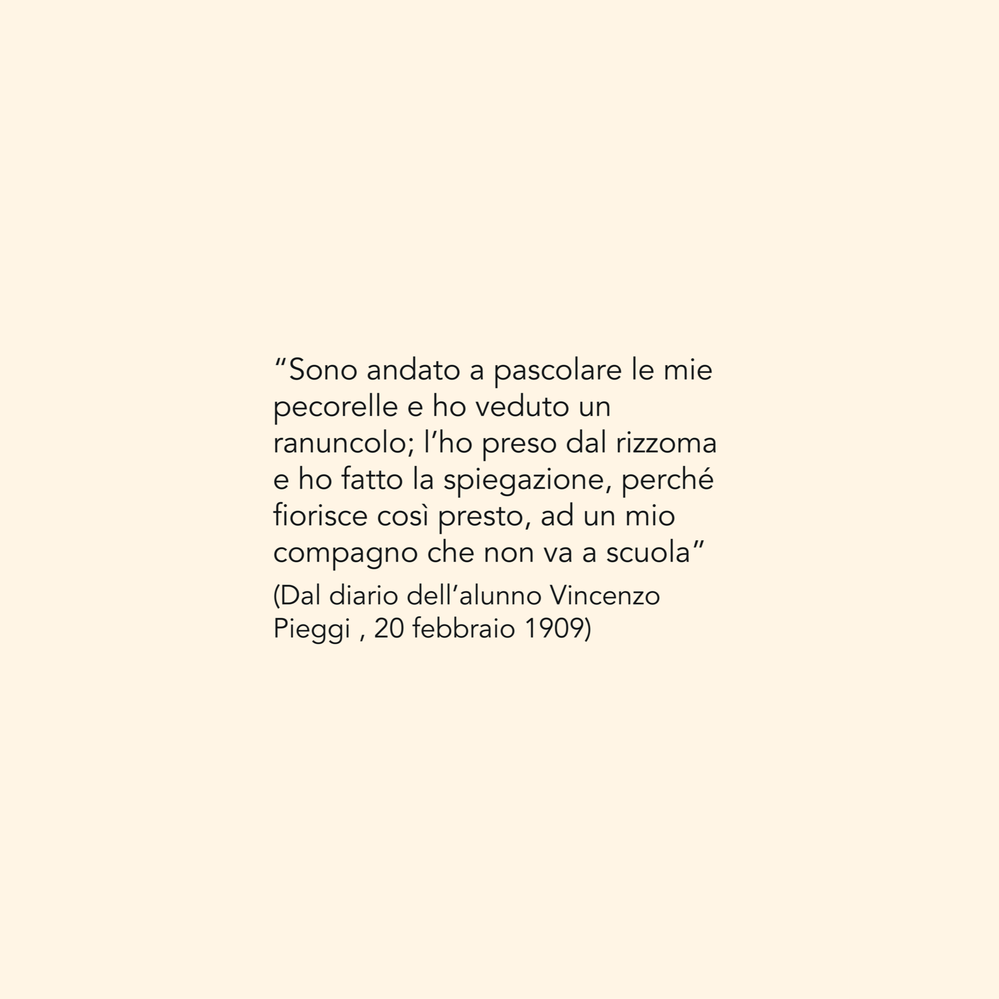
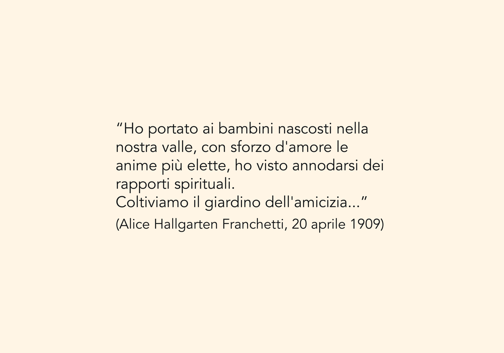
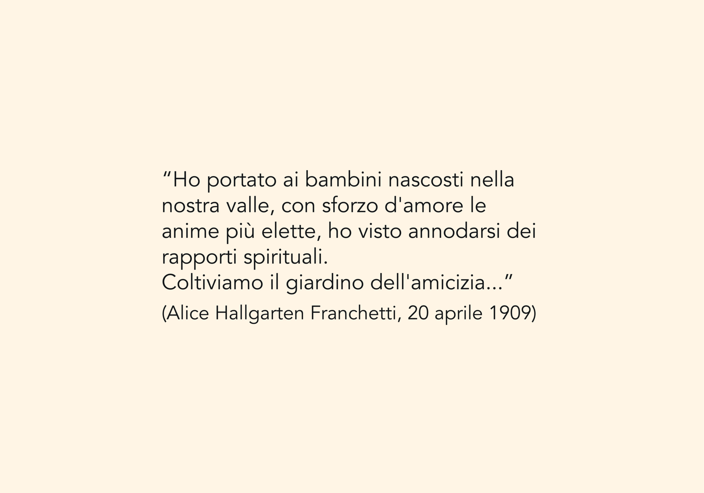
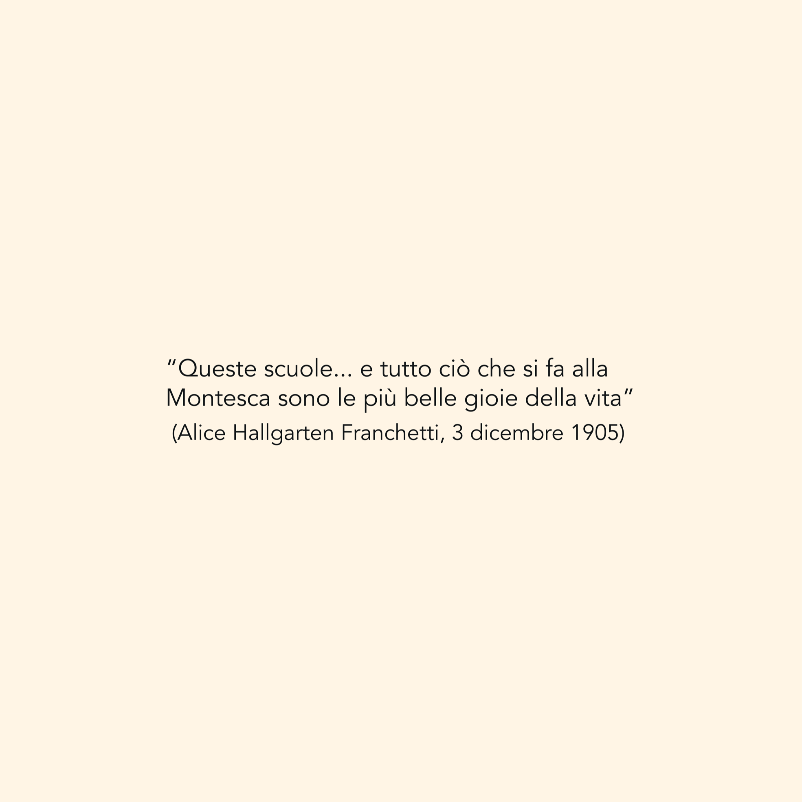
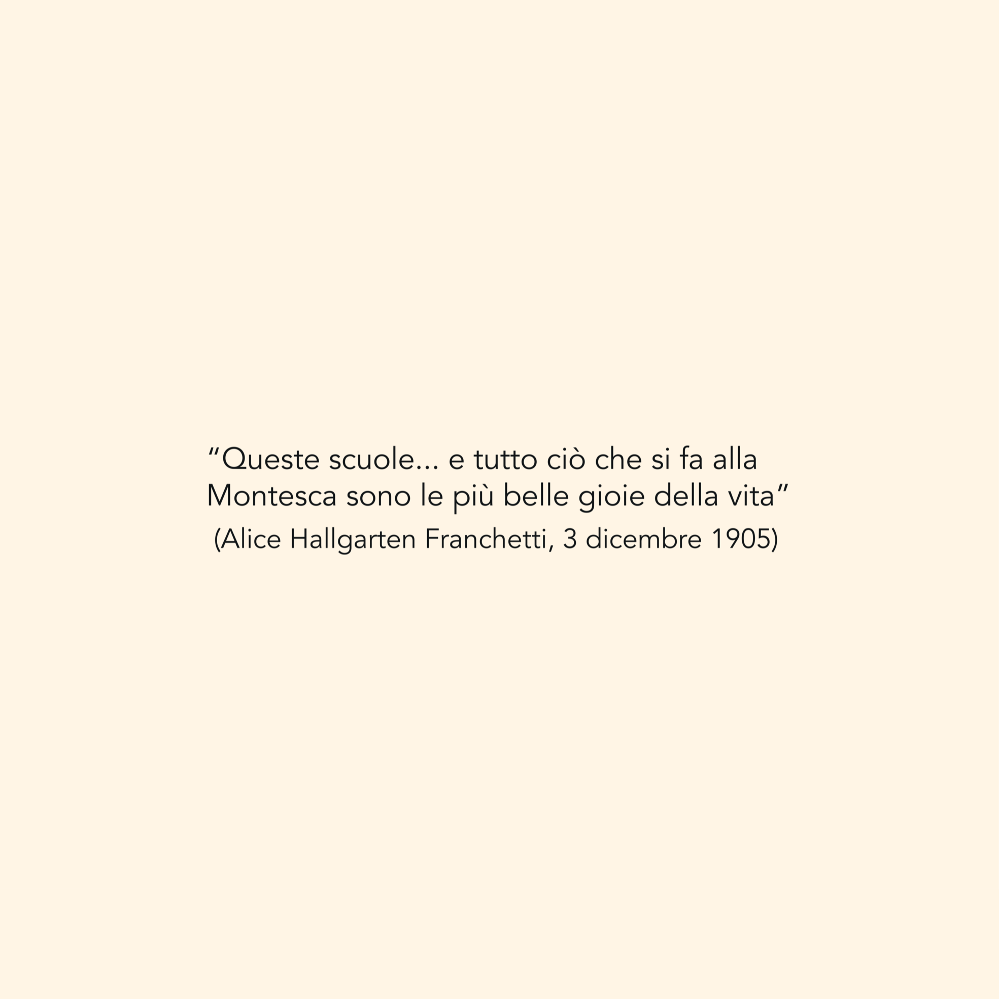

Alice Hallgarten – newyorkese di nascita e moglie del barone Leopoldo Franchetti – trascorse gli anni italiani tra Roma e Città di Castello,
dedicandosi al miglioramento delle condizioni di vita delle comunità rurali e urbane più svantaggiate.
Fin dai suoi primi soggiorni a Roma, partecipò alle attività dell’Unione di San Lorenzo,
impegnandosi in iniziative sociali nello stesso quartiere in cui Maria Montessori aprì la sua prima Casa dei Bambini.
A Città di Castello fondò le scuole rurali di Montesca e Rovigliano, istituite rispettivamente nel 1901 e nel 1902,
per garantire un’istruzione ai figli dei suoi mezzadri.
Aprì inoltre la manifattura tessile Tela Umbra, ancora oggi attiva, e la dotò fin da subito di un asilo dove le lavoratrici potevano lasciare i propri figli durante l’orario di lavoro.
Il suo femminismo pratico, unito a un’attività filantropica di carattere visionario, ha lasciato un'eredità duratura sia a livello locale che internazionale.


 

 

 

 
